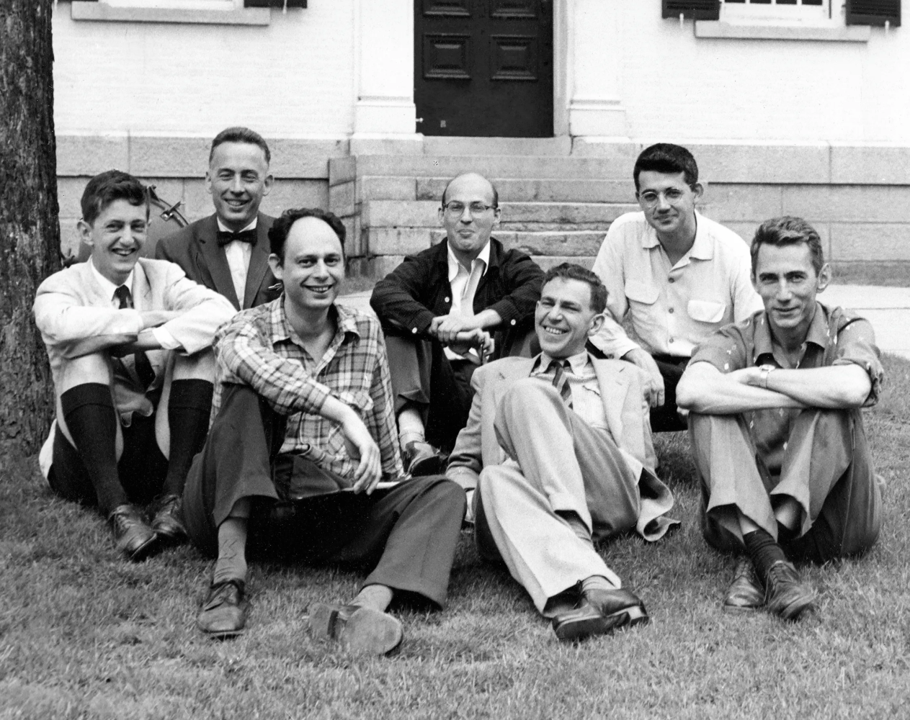
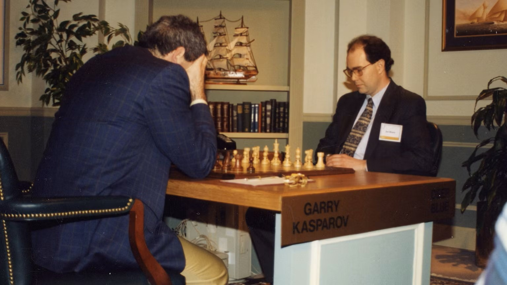

Inteligência Artificial Como Colega de Trabalho
Linha do tempo da Inteligência Artificial
Completando 70 anos em 2026, a IA tem trajetória marcada por avanços científicos, frustrações técnicas e sucessivas reformulações ao longo de décadas.
2: Evolução, Chatbots e os Invernos da IA (1960 - 1997)
A história da inteligência artificial avançou justamente na tensão entre essas duas visões, que continuam, até hoje, a moldar o desenvolvimento di sistemas cada vez mais complexos.

Nos anos 1970 e 1980, os chamados sistemas especialistas, que derivaram dos simbólicos, dominaram o debate. Eram programas baseados em regras explícitas, escritas por humanos, que tentavam capturar o conhecimento de especialistas em áreas como medicina e engenharia. Funcionavam bem em ambientes controlados, mas falhavam diante da complexidade do mundo real. O resultado foi um período conhecido como inverno da IA, marcado por cortes de financiamento e ceticismo acadêmico.
A virada começa a se desenhar nos anos 1990, quando o foco se desloca das regras para os dados. Em vez de dizer à máquina como pensar, pesquisadores passam a permitir que ela aprenda padrões a partir de exemplos. É o avanço do aprendizado de máquina. Em 1997, o supercomputador Deep Blue, da IBM, derrota o campeão mundial de xadrez Garry Kasparov. O feito não indica inteligência geral, mas demonstra a força de algoritmos estatísticos aliados à grande capacidade de processamento.
